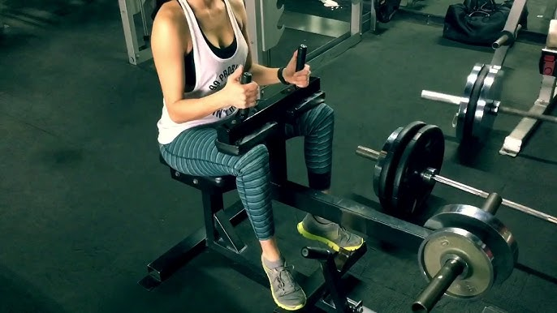

GEMELOS
Los Gemelos es un grupo muscular que se encuentra en la parte posterior de la pierna y está compuesto principalmente por dos músculos: el gastrocnemio y el sóleo. Es un músculo complicado, debido a que su tamaño y forma depende en gran medida de la genética y desarrollarlo requiere una frecuencia de aproximadamente 3 veces a la semana y gran volumen de entrenamiento. Es un músculo que aporta mucho a la estética de las piernas debido, entre muchas otras cosas, a que es un músculo visible usando pantalones cortos, muchos culturistas son tachados de "patas de pollo" debido a la falta de tamaño en sus gémelos, aún y teniendo unos músculos femorales bien desarrollados.
Elevación de Talón de Pie
La elevación de talón es el mejor ejercicio para el desarollo de los gemelos debido a su efectividad. Sabiendo esto, la variante de Pie del ejercicio es la más beneficiosa para la hipertrofia del músculo debido a que trabaja tanto el gastrocnemio como el sóleo de manera más equitativa sumado a su rango de movimiento completo.

Elevación de Talón Sentado
Este es el segudno ejercicio más efectivo para gemelos, te recomiendo realizarlo en la máquina específica. Presenta un rango de movimiento más limitado en comparación con el otro ejercicio de la lista. Este ejercicio tiende a poner más énfasis en el gastrocnemio, el músculo más grande de los gemelos. Debido a la posición de sentado, el sóleo puede no trabajar tanto como lo hace en la versión de pie. Te recomiendo realizar ambos ejercicios.
